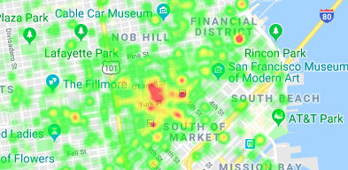

Urgent Calls Heatmap
This presents a heatmap in which the only data points are urgent calls.
Linked below is a heatmap representing the frequency of all types of emergency calls provided in the dataset. The emergency calls are clearly concentrated towards the upper right of the city which one would expect as this is nearer to the center of the city and emergency calls naturally increase in frequency for more densely populated areas. Later on in this page, the different heatmaps will also be correlated with crime to deduce which areas of the city are the most and least safe.
While the frequency heatmap represents all types of emergency calls, however, there is a value in having separate heatmaps of urgent and non-urgent calls as this can illustrate if certain areas have more non-urgent citizen assists (potentially related to a more elderly demographic of people living there) or more urgent calls which can potentially be linked to crime and a less safe area. The separated heatmaps are thus provided below, but it turns out that for San Francisco both are highly similar to each other and to the frequency heatmap provided above.
This presents a heatmap in which the only data points are urgent calls.
This presents a heatmap in which the only data points are non-urgent calls.
These heatmaps can also be used to address which parts of the city are the most safe and calm within San Francisco as greater number of emergency calls clearly mean a less calm and potentially less safe area. Specifically, more urgent calls correlate significantly with crime and can be used to identify the safety of a neighborhood at least in terms of its crime rate. As observed above however, the urgent and non-urgent heatmaps are almost identical with the calls being extremely dense in the upper right corner of the city and decreasing greatly as one gets farther away from that corner. Thus, regardless of whether one is considering which parts of the neighborhood are most calm (the least non-urgent dispatches) or most safe (the least urgent dispatches), any neighborhood not in the upper right corner (specifically South of Market and Tenderloin to name the most concentrated pockets of activity) will be relatively calm and safe.